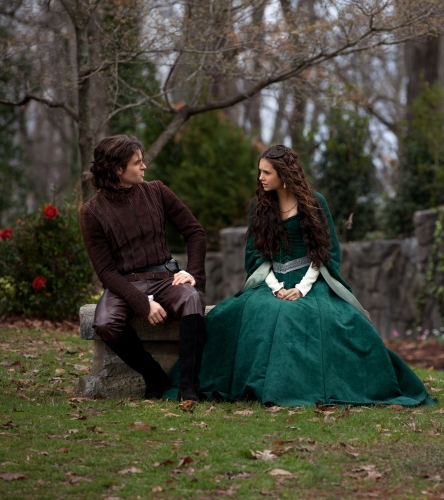

Episode 19 - KLAUS

KLAUS IS REVEALED - Stefan and Damon be furious when they discover
that Elena has been challenging both of them to do a new ally and
for she has the control of the plan to maneuver Klaus. Disagreements
about how protect Elena makes the tension between the brothers Salvatores
grow. While this, Stefan has his hands full trying to keep a confused and
scared Jenna safe. Flashbacks of 1492 reveals the introduction from Katherine
to Elijah and Klaus, that comes together with the beging of lunarian's
curse. Elena learns new shocking informations about the reasons of Klaus.
Matt Davis are staring the episode too.
Go to GUIDE SECOND SEASON